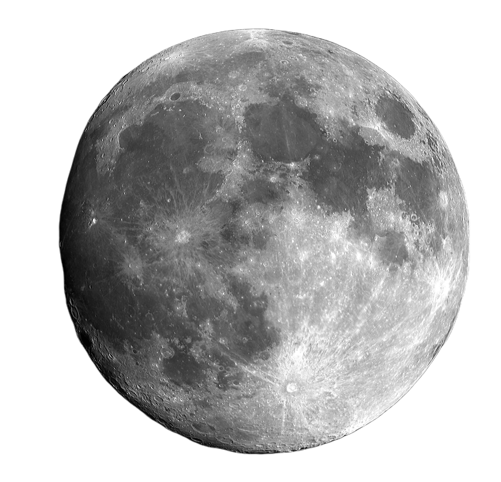

Pewnie nie raz zadawałeś sobie pytanie: Czym właściwie jest kosmos?

+ 350 mld dużych galaktyk
+ 3,5 bln galaktyk karłowatych
+ 40 trylionów czarnych dziur
+ 300 tryliardów gwiazd
Przenieśmy się trochę bliżej i porozmawiajmy o naszej galaktyce.
Czy wiedziałeś że nasza galaktyka 'niedługo' zderzy się z Andromedą? Ale spokojnie...

Ahh w końcu w domu, no prawie. Nastał czas aby omówić nasz Układ Słoneczny.
Ahh w końcu w domu, no prawie. Nastał czas aby omówić nasz Układ Słoneczny.
Nareszcie dotarliśmy...
Ile planet znajduje się w Układzie Słonecznym?
W Układzie Słonecznym znajduje się osiem planet, są to w kolejności od Słońca: Merkury, Wenus, Ziemia, Mars, Jowisz, Saturn, Uran i Neptun. Pierwsze cztery to planety skaliste, kolejne zaś to gazowe olbrzymy.
Czym był wielki wybuch?
Wielki wybuch jest to najwcześniejsze znane wydarzenie w obserwowalnym Wszechświecie, podczas którego z bardzo gęstej i gorącej materii wyłonił się nasz wszechświat. Jeśli chcesz dowiedzieć się więcej na ten temat kliknij w link.
Jak stary jest wszechświat?
Wszechświat jest bardzo stary. Szacowany wiek wszechświata wynosi 13,82 miliarda lat. Poza tym wszechświat ciągle się rozszerza.
Horyzont zdarzeń, co to takiego?
Horyzont zdarzeń otacza czarną dziurę lub tunel czasoprzestrzenny. Oddziela obserwatora od zdarzeń. Inaczej jest to granica w czasoprzestrzeni, której po przekroczeniu żaden obiekt nie jest w stanie opuścić, nawet światło.
Czas na pytania, masz jakieś? Coś powtórzyć?
Masz już podstawową wiedzę na temat kosmosu. Jeśli jednak jakiegoś pytania nie było na liście napisz do nas. Ja zmykam, do zobaczenia.